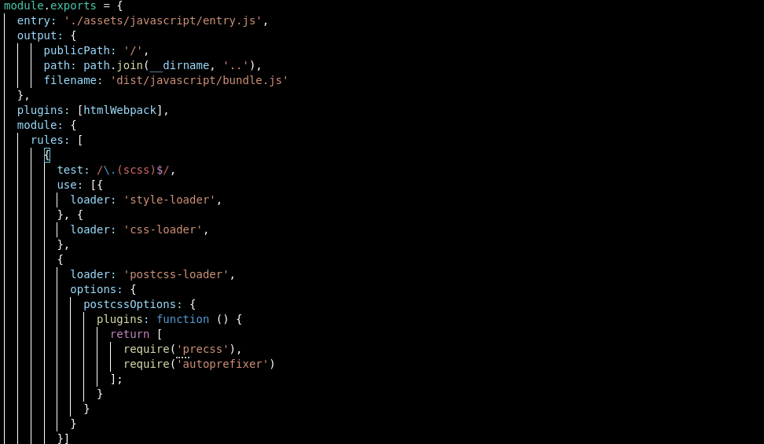

BSALE CHALLENGE
Introducción
El presente proyecto corresponde a un app Frontend que consume datos desde una API RESTful. Su creación tiene como objetivo ser parte de un desafío de selección para formar parte del equipo de desarrolladores de la empresa "bsale". A continuación podrás revisar la documentación de dicho proyecto y además podŕas revisar en detalle las funciones principales en la barra de navegación ubicada en el costado superior derecho de este sitio.
Contexto
En primer lugar, se solicita conectar la base de datos entregada a una aplicación backend construida en un framework de elección basado en arquitectura REST, con el fin de servir los datos alojados en la nube de dicha BD. En segundo lugar, se debe construir el cliente/frontend en javascript vanilla para consumir dicha API RESTful. Además, se requiere crear un buscador que retorne las busquedas filtradas desde el servidor, entre otros requerimientos para simular una tienda virtual.
Solución
En respuesta a lo solicitado y considerando que estamos ubicados en la capa, decidí usar el siguiente stack de desarrollo: Para el backend el framework de node expressJS, para gestionar la base de datos sequelizeJS (ORM). En cuanto a el frontend, lo siguiente: webpack, bootstrap, sass/css, javascript vanilla. En estos momentos nos ubicamos en la capa frontend del proyecto, si quieres revisar la documentación que referencia la API REST desarrollada, te invito a visitar el siguiente enlace:
https://bsale-challenge.herokuapp.com/api-docs/Frontend
Entorno de desarrollo (pre-requisitos)
- Node JS v16.13.1
- Webpack v5.66.0
Stack
- Javascript vanilla
- Bootstrap v5.1.3
- Css/Sass
Dependencias
https://raw.githubusercontent.com/gustavoromerocl/bsale-client/master/assets/screenshots/dependencies.png
Instalación local
1- Ingresar o posicionar tu terminal en la caperta raíz del proyecto
2- Ejecutaremos npm install para instalar las dependencias de node_modules
3- Ejecutamos npm run dev para ejecutar el webpack server en http://localhost:3000
Webpack
Webpack es una herramienta que realiza multiples funciones, además de servir la aplicación en el entorno de desarrollo, su principal función es empaquetar, minimizar y exportar los archivos del proyecto para su correcta funcionalidad en producción. A continuación revisaremos la configuración usada en el proyecto:
Configuración general:
Testing
Para asegurar de que todo funcione de manera correcta, realice testing manual sobre las principales funcionalidades. Puedes revisar la función mecionada en cada feature en detalle a traves de la barra lateral
Feature 1
Descripción: Agregar un buscador, el cual tiene que estar implementado a nivel de servidor, mediante una Api Rest.
Resultado esperado: Se espera que al ingresar el nombre de un producto, se devuelvan las coincidencias.
Resultado obtenido: La barra de busqueda retorna correctamente las coincidencias mediante el boton y la escucha del evento del teclado. Para evitar realizar multiples peticiones al servidor por cada tecla presionada, la función que lo realiza tiene un delay de 1000ms y un limpiador de intervalos.
Función utilizada: searchProduct()
Feature 2
Descripción: Implementar filtros por atributo.
Resultado esperado: Se espera mostrar las categorias disponibles y que al seleccionar una categoria, se devuelvan todos los productos que pertenecen a dicha categoria.
Resultado obtenido: La selección multiple carga correctamente los nombres de las categorias son obtenidos desde la API REST. Además, al seleccionar una categoria, también trae los productos asociados.
Función utilizada: setFilter()
Deploy
Para gestionar el deploy en firebase, segui las instrucciones del sitio oficial que podrán revisar en la sección wiki de la documentación.
Requerido: Instalar Firebase: npm install -g firebase npm install -g firebase-tools
Iniciar sesión en firebase: firebase login
Integrar firebase al proyecto: firebase init
Ejecutar deploy: firebase deploy --only hosting
Url del proyecto: https://bsale-client-594e1.web.app/
Wiki
Integrar bootstrap en webpack: [https://getbootstrap.com/docs/4.0/getting-started/webpack/]
Integrar Firebase al proyecto: [https://firebase.google.com/docs/hosting/quickstart?hl=es]
Autor
- Gustavo Romero - Desarrollo y documentación
Conclusiones
Durante el desarrollo de este desafío adquirí nuevos conocimientos en base a la arquitectura API REST y documentación. También hago una autocrítica en la falta de programación orientada objetos en el lado del cliente, revisando me percaté de que hubiese sido una buena idea trabajar con clases, no solo por la escalabilidad y modularización, también a la hora de documentar se torna mucho mas claro con herramientas como jsdoc que permite detallar las clases. Para mi, fue muy gratificante trabajar con swagger y jsdoc, son herramientas que desconocía y que tienen mucho potencial para ayudar en la documentación. Por ultimo, me queda solo agradecer la oportunidad de llevar mi habilidad un paso más adelante de la teoría y construir con lo que he aprendido durante estos últimos años dedicados a la programación.